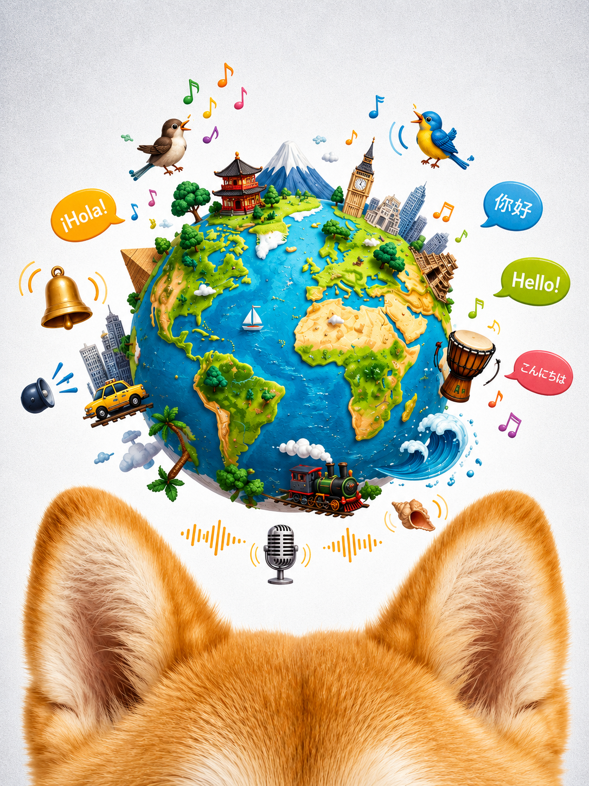
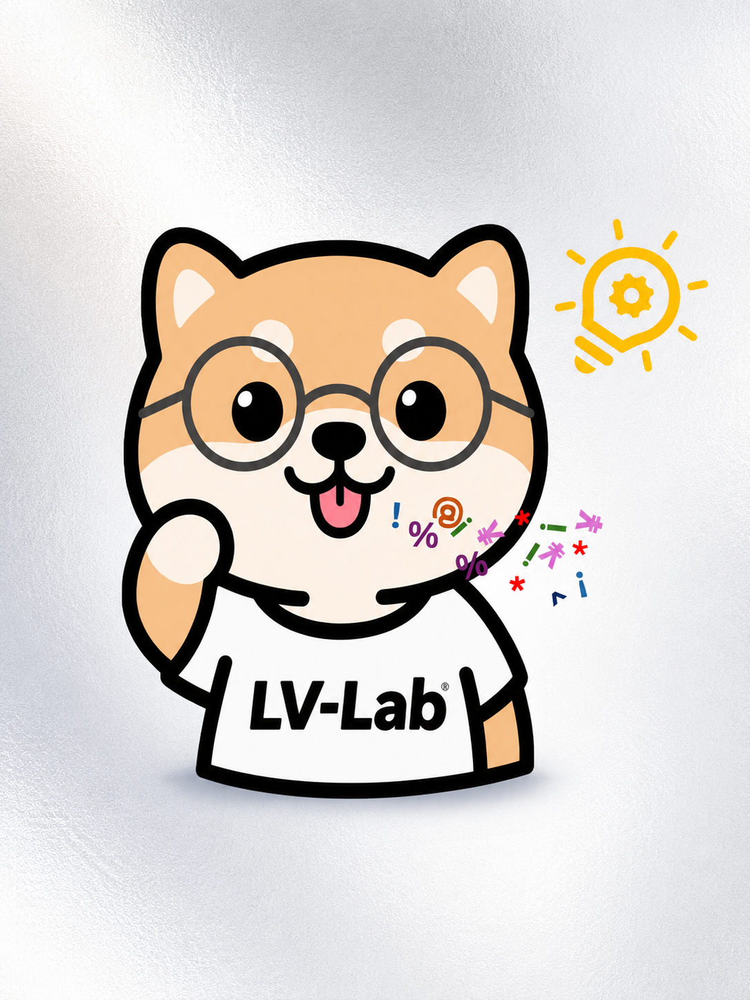
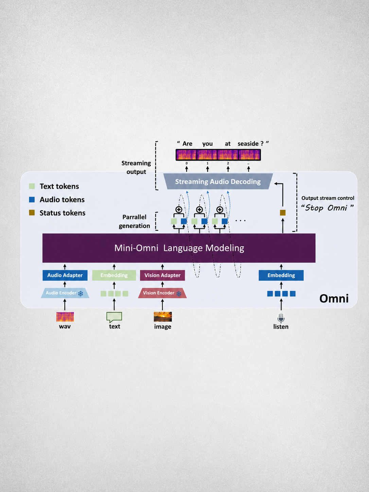
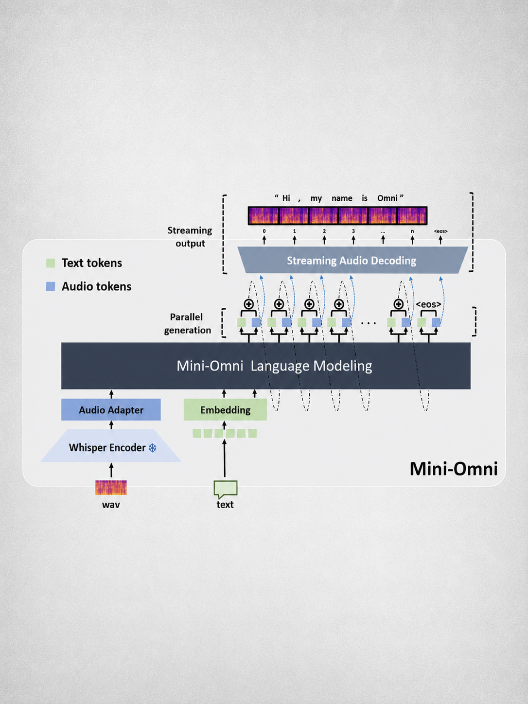

I am a Ph.D. student at LV-Lab, Nanyang Technological University, advised by Prof. Shuicheng Yan and Prof. Chunyan Miao. I am also a two-time founder and CEO: I built and led two startups before and during my Ph.D., shipping DreamFactory as CEO of my first company and later founding Pask.ai, where our proactive agent work grew out of real product needs. Before that I received my bachelor's degree from Beijing Institute of Technology, studied at Tsinghua University, and interned at the Qwen Team under the supervision of Dr. Jin Xu.
My research focuses on large audio language models and real-time speech interaction — building models that hear, think and speak at the same time. I led the Mini-Omni series, the first open-source end-to-end speech-to-speech conversational models, whose architecture has since been adopted as a starting point by a generation of omni models, together with Audio-Reasoner, Mini-Omni-Reasoner, Mega-ASR, the Audio Interaction Model and VoiceMem. I hold research to one bar: it has to be worth doing. Going forward I keep pushing on always-on multimodal interaction, with a focus on interactivity, robustness, reasoning and proactivity.
Outside the lab I advise industry teams on speech technology, have played in symphony orchestras for 16 years, and love animals — many of my projects use a Shiba Inu avatar in memory of Guagua, who grew up with me.


Every speech assistant so far waits to be spoken to. The Audio Interaction Model removes that assumption: it treats the whole soundscape — speech, ambient events, and instructions — as one continuous stream, and at every moment decides for itself whether to stay silent or intervene. We formalise the always-on perceive–decide–respond loop, realise it end to end with the SoundFlow framework, and release StreamAudio-2M (2.6M items, 302K hours, 7 capability families) plus Proactive-Sound-Bench, turning "when should the model speak?" into a measurable problem. This is the interaction paradigm we believe the next generation of LALMs will be built on.

Instruction-based audio editing arrived fast; the evaluation infrastructure did not. MMAE is the first comprehensive testbed for general-purpose instruction-based audio editing: 7 audio modalities, 6 levels of task complexity up to multi-hop and multi-round editing, 8 operation types, and 2,000 human-agent curated samples with a rubric-based protocol. Its first verdict is sobering — even the best current model scores an exact-match edit rate below 5%, which is exactly why a shared yardstick matters.

ASR looks solved on clean benchmarks and falls apart the moment a room, a crowd or a moving speaker enters the picture. Mega-ASR attacks that gap by scaling physically grounded acoustic simulation instead of collecting more clean data: 7 atomic acoustic conditions composed into 54 real-world scenarios and 2.6M simulated samples (Voices-in-the-Wild-2M), trained with WER-gated policy optimisation on top of Qwen3-ASR-1.7B. The result improves over Qwen3-ASR by more than 30% under in-the-wild conditions and ranks first on the FFASR far-field leaderboard — a recognition backbone that holds up where products actually run.

Long-form generation is where agents quietly hallucinate the most: the longer the report, the further it drifts from its sources — and agentic search frameworks are still text-only, while real expert reports are full of figures. Deep-Reporter is a unified agentic framework for grounded multimodal long-form generation: multimodal search and filtering, checklist-guided incremental synthesis for image-text integration and citation placement, and recurrent context management for long-range coherence. We also release M²LongBench — 247 research tasks across 9 domains with a stable multimodal sandbox — making this new task measurable without commercial APIs.

Assistants answer; they do not anticipate. Proactivity has stayed a lab demo because the real setting is hard: ambiguous latent needs, long horizons, hard latency budgets. PASK proposes DD-MM-PAS (demand detection, memory modelling, proactive agent system) as a general paradigm for streaming proactive agents, and instantiates it in a shipped product with the streaming IntentFlow model and a hybrid workspace/user/global memory. We also release LatentNeeds-Bench, built from user-consented real data. Under latency constraints IntentFlow matches leading Gemini3-Flash models while surfacing deeper intent — proactivity as a working system, not a demo trick.

Speech models have had to choose between thinking and talking: reason first and the user waits, answer immediately and the reasoning is gone. Mini-Omni-Reasoner dissolves the trade-off by interleaving silent reasoning tokens with spoken tokens inside a single stream — the model literally thinks between the words it says. It lifts arithmetic reasoning on Spoken-MQA by +19.1% at zero additional decoding latency, and introduces Spoken-Math-Problems-3M to train it. "Thinking-in-speaking" has since become a named paradigm in spoken reasoning.
The reasoning revolution skipped audio entirely. Audio-Reasoner was the first large audio language model with native in-depth thinking, showing that structured chain-of-thought training transfers to sound, music and speech. Trained on CoTA — 1.2M reasoning-rich samples we built and released — it set state of the art with +25.42% on MMAU-mini, +14.57%/+10.13% on AIR-Bench and +8.01% on MELD, and took the silver medal on the official MMAU leaderboard. CoTA and the model are now standard baselines for audio reasoning research.
Cited by Qwen3-Omni · Audio Flamingo 3 · MMAR (NeurIPS 2025) · MMAU-Pro · SonicBench · referenced by the Interspeech 2026 Audio Reasoning Challenge

Two months after GPT-4o's demo, no one outside a frontier lab could run anything like it. Mini-Omni2 was the first open-source real-time audio-visual interaction model with duplex capability: it sees, hears and answers in live voice, and — crucially — it can be interrupted mid-sentence, which is what makes a conversation feel human. All of it end to end, with no bolted-on ASR or TTS, in a model small enough to run on a single GPU. It gave the open community a working reference for GPT-4o-style interaction and passed 1.5k GitHub stars.
Cited by Qwen2.5-Omni · Baichuan-Omni-1.5 · MiniCPM-o · VITA-1.5 · Step-Audio · EMOVA

Mini-Omni gave language models a voice of their own. It was the first open-source model with direct end-to-end speech-to-speech capability: text-instructed parallel speech generation with batch-parallel decoding lets the model think and talk in the same forward pass, removing the ASR→LLM→TTS pipeline that had made open voice assistants slow and lifeless. Released in August 2024, it became the #1 Paper of the Day on Hugging Face, passed 3k GitHub stars, and its architecture was adopted as a starting point across the omni-model wave that followed — Qwen2.5-Omni credits it as an architectural basis. It remains the most cited work of the series.
Cited by Qwen2.5-Omni · Kimi-Audio · Step-Audio · GLM-4-Voice · Baichuan-Omni-1.5 · MiniCPM-o · LLaMA-Omni2 · Freeze-Omni

Video models of the day could produce beautiful ten-second clips and nothing resembling a film. DreamFactory reframed long video generation as a production problem rather than a sampling one: a multi-agent framework where LLM agents take the roles of a film crew — script, storyboard, direction, continuity — to keep characters and style consistent across many scenes. Built while I was founder and CEO of my first startup, it was covered by Synced (机器之心) and remains one of the earliest multi-agent takes on minutes-long video.